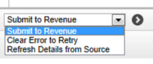

To submit contract notifications electronically:
- Go to Contract Notification Workbench.
The Current tab shows notification records that have not yet been submitted or have recently been submitted. To begin with, the Status column shows Incomplete for new notification records.

- To see what information a notification record still needs, click
 ; any incomplete or invalid data will be highlighted.
; any incomplete or invalid data will be highlighted. - Update the record and complete the contract details: this is likely to be necessary for all new contract notifications in order to answer the questions required by Revenue. The questions are dependent on whether the subcontractor has an Irish Tax Reference and whether it is a Labour Only contract or not.
The Status column shows Ready if all the information is valid.
- Select the notification record or records you want to submit, choose the Submit to Revenue action, and click
 .
.

- Choose the output options for the submission report.
- If a notification is successful,
- If an individual notification is unsuccessful,
When the notifications have been submitted successfully, it is then possible to make payments for the contract.
NOTE
Newly notified records (records notified within the last two days) show on the Current tab; records notified more than two days ago show on the History tab.